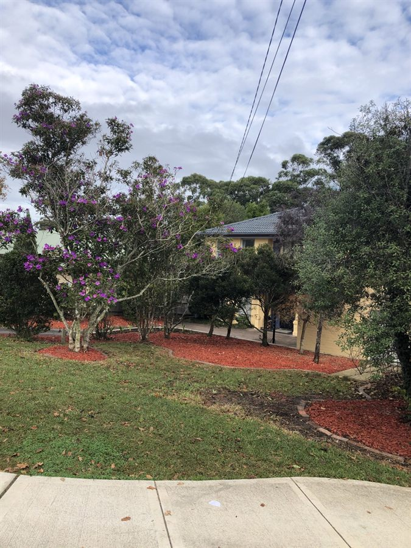
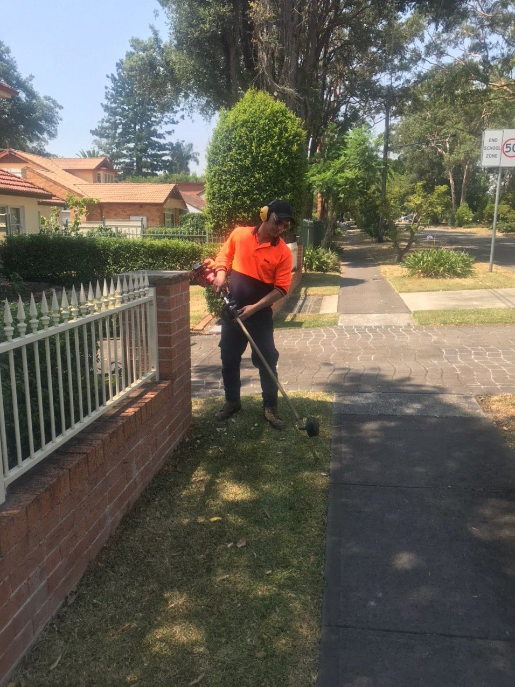
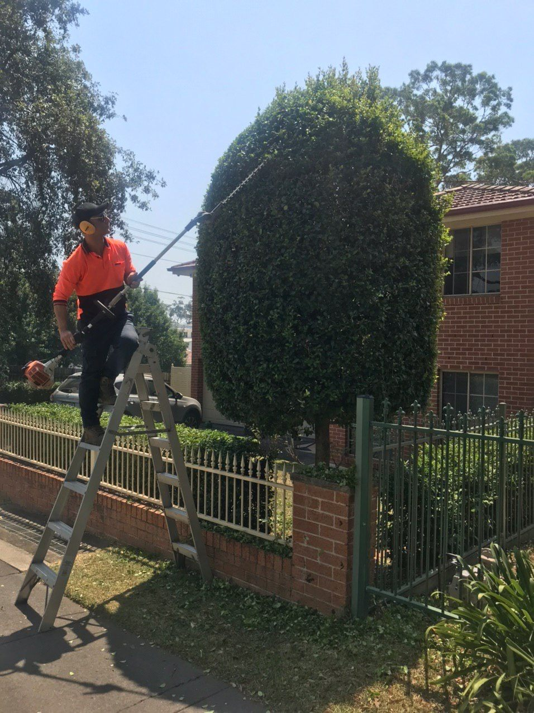
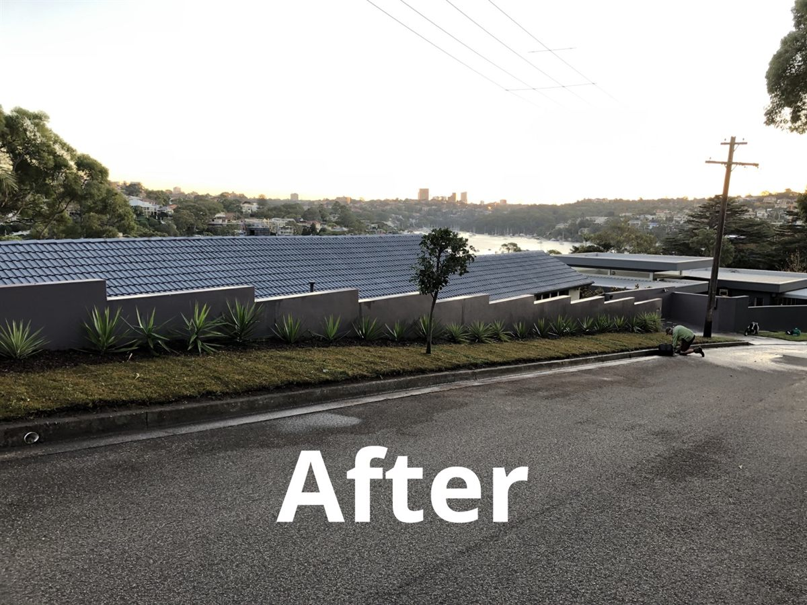
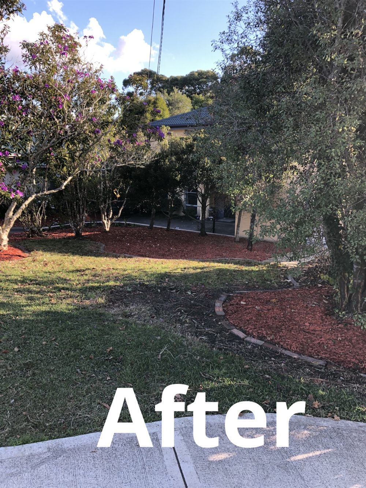
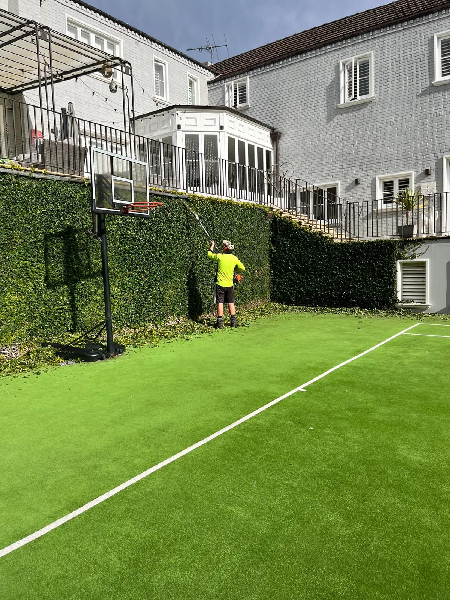
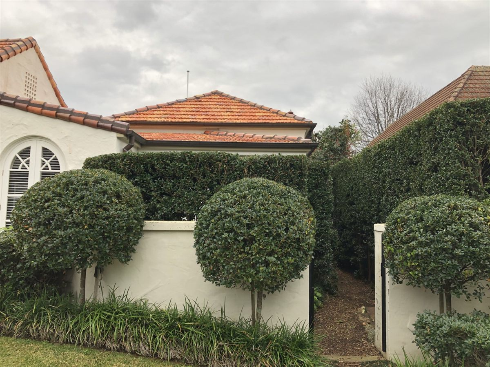
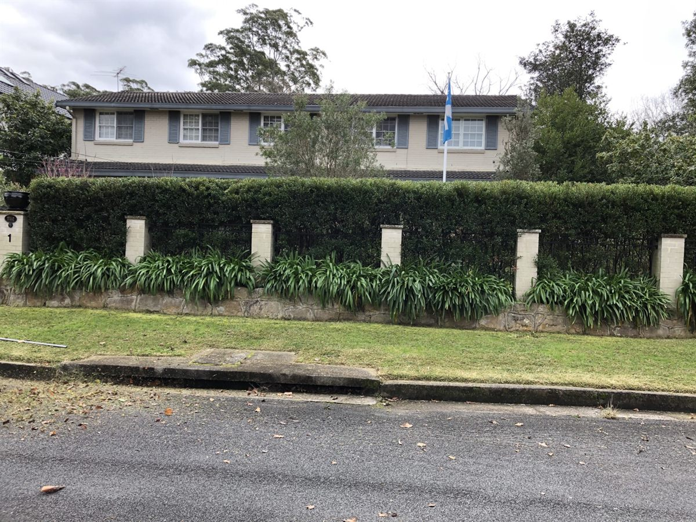

Garden Maintenance
Regular mowing, pruning, weeding, mulching and seasonal care.
View garden maintenanceLocal gardening services
Reliable garden maintenance, lawn mowing, hedge trimming, strata gardening and garden clean ups for homes, strata properties and local businesses.
Services

Regular mowing, pruning, weeding, mulching and seasonal care.
View garden maintenance


Help with overgrown gardens, green waste and getting gardens under control.
View clean ups
Refresh tired garden areas with trimming, mulching and improvement work.
View garden makeovers
Ongoing common area maintenance for strata and shared properties.
View strata gardeningWhy choose us
Grene Gardening focuses on clear communication, tidy work and practical garden maintenance services for St Ives, St Ives Chase and nearby suburbs.
Gallery preview



See our work
This short clip is compressed for the web and only loads metadata until a visitor chooses to play it.
View GalleryFor homeowners, Grene Gardening can help keep lawns, hedges, garden beds and outdoor areas looking tidy through regular maintenance or one-off clean ups.
Local gardener St IvesFor strata buildings and shared properties, services can include common garden care, lawns, hedges, paths, garden beds and green waste removal.
Strata gardening SydneyService areas
Testimonials
Real Google reviews can be added here once approved for use on the website.
Local customer
Use this area for future feedback about strata gardening and common area maintenance.
Strata client
Add a future review about garden clean ups, lawn mowing or hedge trimming.
North Shore homeowner
Call Grene Gardening or send a quick quote request today.